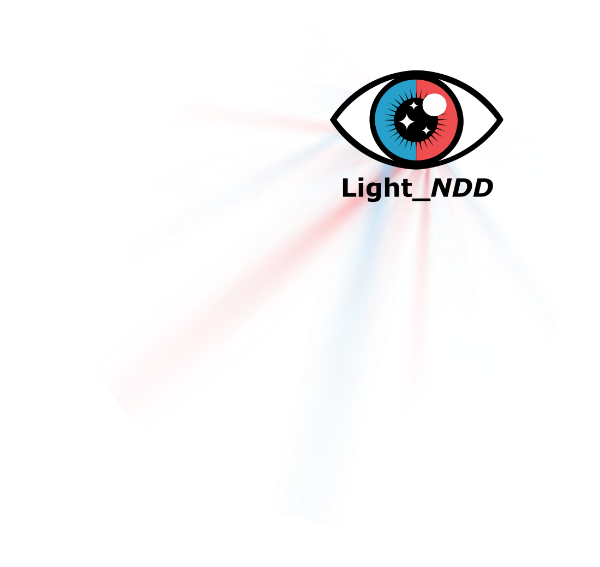
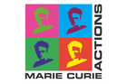

Research Study
Light sensitivity, sleep, circadian rhythms, and wellbeing in neurodevelopmental conditions
Register Your Interest
Sleep and circadian rhythm disturbances are common among people with neurodevelopmental conditions such as autism and ADHD. However, the reasons for these disturbances remain poorly understood.
Light_NDD investigates whether sensitivity to light may play a role in sleep, circadian rhythms and wellbeing in young adults with autism, ADHD or both (AuDHD).
With the participation of study volounteers, the project combines measures of how the eyes respond to light, everyday light exposure and sleep patterns, and wellbeing.
The findings will help inform future light-based interventions for people with neurodevelopmental conditions and raise awareness of lived experiences of light sensitivity.
Investigate pupil responses to light stimuli in young adults with autism, ADHD or AuDHD, compared with adults without a neurodevelopmental condition.
Investigate relationships between everyday light exposure, sleep patterns and wellbeing.
Include lived experience through research co-production. A Lived Experience Advisory Group will provide advice and guidance throughout each phase of the study.
We also aim to raise awareness of lived experiences of light
sensitivity through an initiative inviting people to share photographs
representing their experiences of light sensitivity.
My Light, My Night
Participation involves an evening research visit, wearing sensors for two weeks, and completing online questionnaires.
We will measure your pupil responses to light stimuli. The visit will take approximately 1 hour.
You will wear sensors for 2 weeks, including a wrist ActiWatch and a light sensor worn around the neck.
You will complete online questionnaires about light, your sleep, and mood.
In recognition of your time, you will receive a €180 voucher and a graphical summary of your wearable data.
This research is funded through a NeuroInsight Fellowship, supported in part by a research grant from Science Foundation Ireland (SFI) under Grant Number 21/RC/10294_P2 and co-funded under the European Union’s Horizon 2020 research and innovation programme under the Marie Skłodowska-Curie grant agreement No. 101034252.

Find out whether you are eligible and register your interest in participating in the study.
Take Part